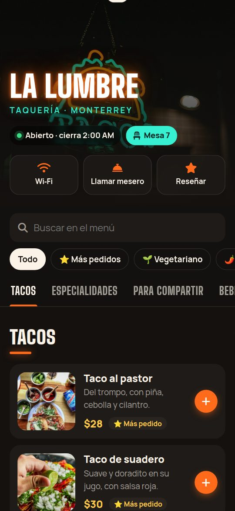

Taquería
Taquerías y fondas
Escanean el QR de su mesa y piden por WhatsApp.
- QR por mesa
- Pedido
- Filtros
- Wi‑Fi
Menús digitales QR · por Yael González
Escanean el QR de su mesa y te mandan el pedido por WhatsApp. Toca un menú y pide.
Pones cuántas mesas tienes y te salen todos los códigos, cada uno con su número. Así el pedido te llega diciendo de qué mesa es.
Generar QR de mesas